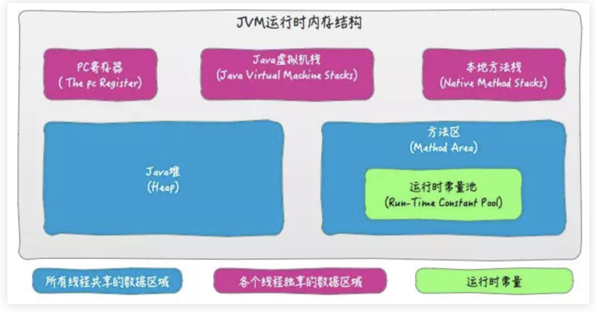

Java内存结构
Contents
请先阅读(若链接无效可以搜索站内文章): Java中变量(Variables)和引用(References)的区别 | 橘猫小八的鱼
1. JVM Run-Time Data Areas
JVN内存结构说的就是Run-Time Data Areas. The Run-Time Data Areas of JVM is vary from different JVM specifications. 不同版本的JVM介绍: https://docs.oracle.com/javase/specs/index.html
说这个之前缕清JVM的内存结构: JVM memory is divided into multiple parts: Heap Memory, Non-Heap Memory.
1.1. Heap
The Java Virtual Machine has a heap that is shared among all Java Virtual Machine threads. The heap is the run-time data area from which memory for all class instances and arrays is allocated.
1.2. Method Area
The Java Virtual Machine has a method area that is shared among all Java Virtual Machine threads. The method area is analogous to the storage area for compiled code of a conventional language or analogous to the “text” segment in an operating system process. It stores per-class structures such as the run-time constant pool, field and method data, and the code for methods and constructors.
Although the method area is logically part of the heap, simple implementations may choose not to either garbage collect or compact it. Method Area属于heap, 但有的JVM实现可能并不会用gc清理这块区域.
三点:
- Methos Area 属于heap, 当然是线程共享
- run-time constant pool属于Method Area
- run-time constant pool -> Method Area -> Heap
1.3. Run-Time Constant Pool
A run-time constant pool is a per-class or per-interface run-time representation of the constant_pool table in a class file. Run-time constant pool就是class file里的constant_pool table.
总结: run-time constant pool -> Method Area -> Heap, Each instance of the Java virtual machine has one method area and one heap. These areas are shared by all threads running inside the virtual machine. When the virtual machine loads a class file, it parses information about a type from the binary data contained in the class file. It places this type information into the method area. As the program runs, the virtual machine places all objects the program instantiates onto the heap. 下图描述了一个class file有一个constant pool, 然后被存放在Method Area, 但该图并不准确, 因为Method Area其实是属于Heap的.
1.4. Java Virtual Machine Stacks
以上三个都是heap里面的东西, 现在是stack
Each Java Virtual Machine thread has a private Java Virtual Machine stack, created at the same time as the thread. A Java Virtual Machine stack stores frames. A Java Virtual Machine stack is analogous to the stack of a conventional language such as C: it holds local variables and partial results, and plays a part in method invocation and return.
1.5. The pc Register
Each Java Virtual Machine thread has its own pc (program counter) register. At any point, each Java Virtual Machine thread is executing the code of a single method, namely the current method for that thread.
以上内容参考自: The Java Virtual Machine Specification, Java SE 19 Edition
Keep in mind that the Java virtual machine contains a separate runtime constant pool for each class and interface it loads:

1.6. 补充
上面提到了frame和dynamic linking, 下面做个补充:
Frame: A frame is used to store data and partial results, as well as to perform dynamic linking, return values for methods, and dispatch exceptions. A new frame is created each time a method is invoked. A frame is destroyed when its method invocation completes, whether that completion is normal or abrupt (it throws an uncaught exception). Frames are allocated from the Java Virtual Machine stack of the thread creating the frame. Each frame has its own array of local variables, its own operand stack, and a reference to the run-time constant pool of the class of the current method.
Dynamic Linking: When you compile a Java program, you get a separate class file for each class or interface in your program. Although the individual class files may appear to be independent, they actually harbor symbolic connections to one another and to the class files of the Java API. When you run your program, the Java virtual machine loads your program’s classes and interfaces and hooks them together in a process of dynamic linking. As your program runs, the Java virtual machine builds an internal web of interconnected classes and interfaces.
A class file keeps all its symbolic references in one place, the constant pool. Each class file has a constant pool, and each class or interface loaded by the Java virtual machine has an internal version of its constant pool called the runtime constant pool(可以看出runtime constant pool和class file里的constant pool table是对应的). The runtime constant pool is an implementation-specific data structure that maps to the constant pool in the class file. Thus, after a type is initially loaded, all the symbolic references from the type reside in the type’s runtime constant pool.
以上内容参考自: https://www.artima.com/insidejvm/ed2/linkmod.html
2. String Pool 在哪? 到底存不存在String Pool?
看了一下Java SE 18的JVM实现标准里的Runtime Data Area, 里面并没有提到String Pool这个名词, 但是提到了Method Area中的Runtime Constant Pool, 感觉String应该在这里. 至于String在哪, 毫无因为在heap上, 我们要探究的是string的对象具体在heap的哪个部分(貌似探究这个没什么意义 ummmm) 况且, 所有对象都在heap上,这句话是不变的真理.
Whenever we declare a variable or create an object, it is stored in the memory. At a high level, Java divides the memory into two blocks: stack and heap. https://www.baeldung.com/java-string-constant-pool-heap-stack
Runtime Constant Pool(runtime constant pool)在Method Area, 然后Method Area在heap上, 那么Runtime Constant Pool的内容是什么呢? 上面我们提到Runtime Constant Pool就是class file里的constant pool table, 想知道runtime constant pool里有什么, 就要知道class file里constant pool table的格式内容, 去Java SE 18标准看看:
找到了, 这句话不知道说的啥意思, 但感觉constant pool挺重要,
Java Virtual Machine instructions do not rely on the run-time layout of classes, interfaces, class instances, or arrays. Instead, instructions refer to symbolic information in the constant_pool table:
Each entry in the constant_pool table must begin with a 1-byte tag indicating the kind of constant denoted by the entry, 如下图, 我们去4.4.3看看哪个CONSTANT_String是什么:
The CONSTANT_String_info structure is used to represent constant objects of the type String:
所以, String对象就在这——runtime constant pool.

3. GC and String
Before Java 7, the JVM placed the Java String Pool in the PermGen space, which has a fixed size — it can’t be expanded at runtime and is not eligible for garbage collection.
The risk of interning Strings in the PermGen (instead of the Heap) is that we can get an OutOfMemory error from the JVM if we intern too many Strings.
From Java 7 onwards, the Java String Pool is stored in the Heap space, which is garbage collected by the JVM. The advantage of this approach is the reduced risk of OutOfMemory error because unreferenced Strings will be removed from the pool, thereby releasing memory.
所以String对象会被GC清理, 却String存储在heap上, 可能说的有点区别, 比如string存储在string pool, 不会直接说存储在heap上.

Author David
LastMod 2023-05-14